Curadoria local da direção de arte: obras escolhidas, procedência e licença, e a paleta extraída delas. Gerado por scripts/ferramentas/make-painel.mjs a partir de content/images.json. Consulta feita em 4 de outubro de 2026.
Marfim #f8f1e1
Luz das carnações e do véu; papel do site
Ultramar #1d3a8c
Manto de Maria na Madona de Bellini, nas zonas iluminadas
Noite #111a3d
Mesmo manto, nas sombras (amostra #161424 a #1A1A32, levemente azulada para contraste)
Madder #8f3524
Cortina vermelha de Bellini (amostra #952A0C) e vestes de Memling (#883528), suavizada
Umbra #231a17
Sombras quentes de Memling (#582B22) e Gerard David (#14120D), usada como cor do texto
Ouro envelhecido #b8893a
Dourados de Bellini (#B89764) e Reni (#B8935D); só em filetes
Ouro para texto #7a5712
Versão escurecida do ouro, para contraste de 5,8:1 sobre marfim
Céu #8fa7b3
Céus de Gerard David (#789EAC) e Bellini (#7A8291)
Verde de paisagem #55613f
Paisagem de Gerard David (#545136)
Tipografia: Cormorant Garamond (títulos) e Atkinson Hyperlegible (texto e interface), ambas SIL OFL 1.1, auto-hospedadas.
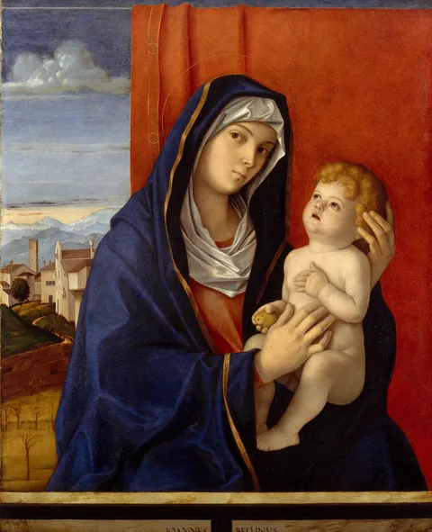
Madona com o Menino
Giovanni Bellini, fins da década de 1480. óleo sobre madeira.
Instituição: The Metropolitan Museum of Art, Nova York. Acesso: 08.183.1
Licença: CC0 1.0 (Open Access do The Metropolitan Museum of Art)
https://www.metmuseum.org/art/collection/search/435641
Foco desktop 50% / 28%, celular 50% / 26%. Uso: Abertura da página inicial.
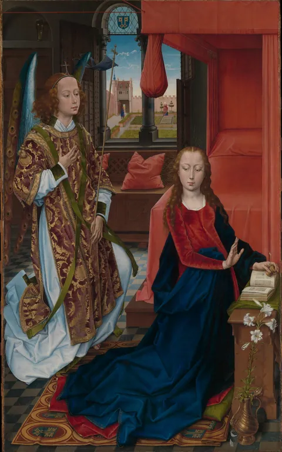
A Anunciação
Hans Memling, cerca de 1465-70. óleo sobre madeira.
Instituição: The Metropolitan Museum of Art, Nova York. Acesso: 17.190.7
Licença: CC0 1.0 (Open Access do The Metropolitan Museum of Art)
https://www.metmuseum.org/art/collection/search/437490
Foco desktop 50% / 31%, celular 50% / 31%. Uso: Capítulo sobre a Anunciação.
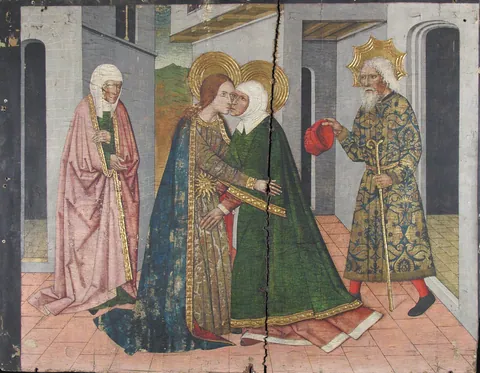
A Visitação (painel do retábulo de São João)
Domingo Ram, século XV. têmpera sobre madeira, fundo dourado.
Instituição: The Cloisters Collection, The Metropolitan Museum of Art, Nova York. Acesso: 25.120.671
Licença: CC0 1.0 (Open Access do The Metropolitan Museum of Art)
https://www.metmuseum.org/art/collection/search/470876
Foco desktop 50% / 30%, celular 50% / 32%. Uso: Capítulo sobre a Visitação.
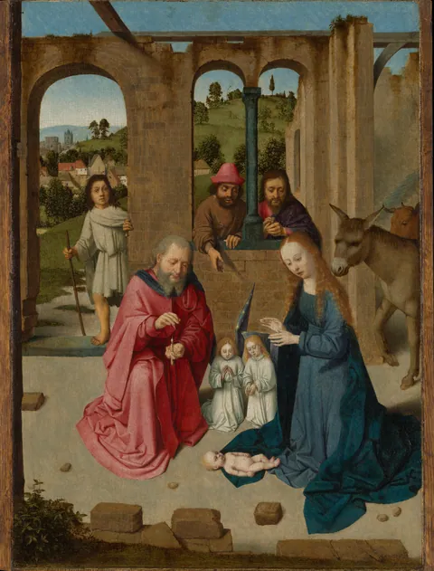
A Natividade
Gerard David, início da década de 1480. óleo sobre madeira.
Instituição: The Metropolitan Museum of Art, Nova York. Acesso: 32.100.40a
Licença: CC0 1.0 (Open Access do The Metropolitan Museum of Art)
https://www.metmuseum.org/art/collection/search/436100
Foco desktop 52% / 60%, celular 52% / 62%. Uso: Capítulo sobre o nascimento de Jesus.
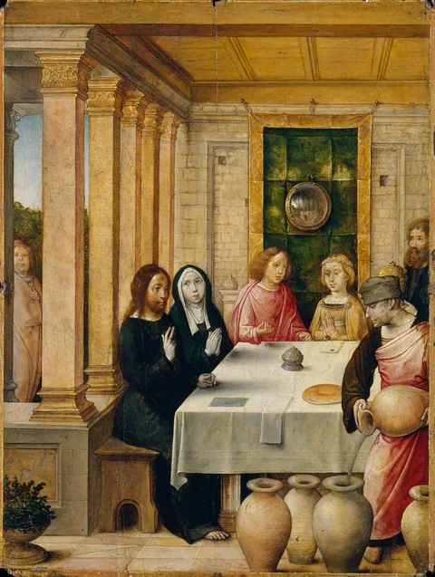
As Bodas de Caná
Juan de Flandes, cerca de 1497. óleo sobre madeira.
Instituição: The Metropolitan Museum of Art, Nova York. Acesso: 1982.60.20
Licença: CC0 1.0 (Open Access do The Metropolitan Museum of Art)
https://www.metmuseum.org/art/collection/search/436801
Foco desktop 42% / 34%, celular 38% / 36%. Uso: Capítulo sobre Caná.
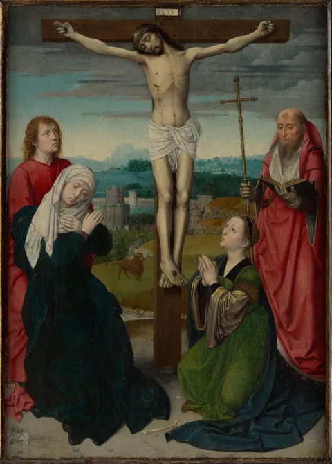
A Crucificação
Gerard David, cerca de 1495. óleo sobre madeira.
Instituição: The Metropolitan Museum of Art, Nova York. Acesso: 09.157
Licença: CC0 1.0 (Open Access do The Metropolitan Museum of Art)
https://www.metmuseum.org/art/collection/search/436098
Foco desktop 40% / 45%, celular 36% / 48%. Uso: Capítulo sobre a cruz e o Cenáculo.
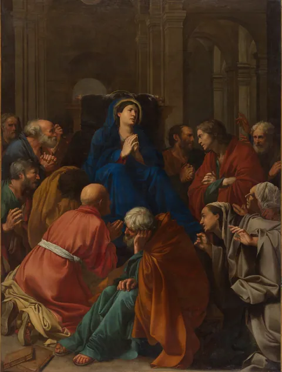
A Dormição da Virgem
Carlo Saraceni, cerca de 1612. óleo sobre tela.
Instituição: The Metropolitan Museum of Art, Nova York. Acesso: 2019.406
Licença: CC0 1.0 (Open Access do The Metropolitan Museum of Art)
https://www.metmuseum.org/art/collection/search/438690
Foco desktop 58% / 24%, celular 58% / 24%. Uso: Capítulo sobre o fim da vida terrena de Maria na tradição.
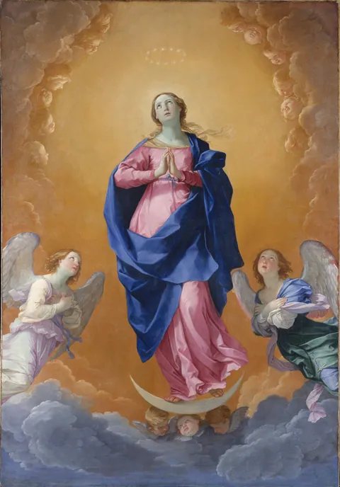
A Imaculada Conceição
Guido Reni, 1627. óleo sobre tela.
Instituição: The Metropolitan Museum of Art, Nova York. Acesso: 59.32
Licença: CC0 1.0 (Open Access do The Metropolitan Museum of Art)
https://www.metmuseum.org/art/collection/search/437423
Foco desktop 50% / 22%, celular 50% / 20%. Uso: Página sobre a Imaculada Conceição.
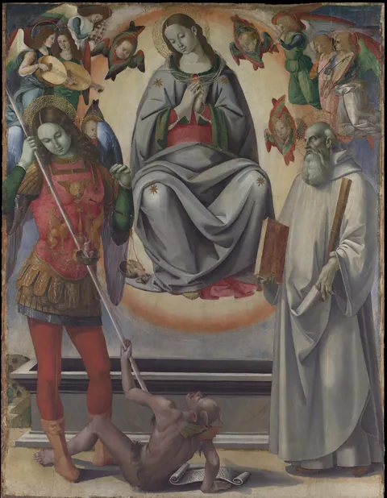
A Assunção da Virgem com São Miguel e São Bento
Luca Signorelli, cerca de 1493-96. óleo e ouro sobre madeira.
Instituição: The Metropolitan Museum of Art, Nova York. Acesso: 29.164
Licença: CC0 1.0 (Open Access do The Metropolitan Museum of Art)
https://www.metmuseum.org/art/collection/search/437673
Foco desktop 50% / 16%, celular 50% / 16%. Uso: Página sobre a Assunção.
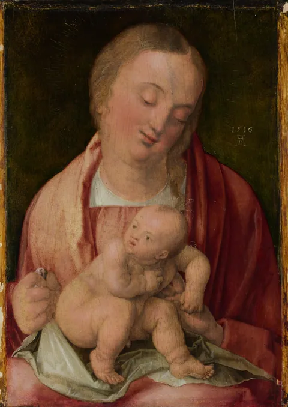
A Virgem e o Menino
Albrecht Dürer, 1516. óleo sobre pícea.
Instituição: The Metropolitan Museum of Art, Nova York. Acesso: 17.190.5
Licença: CC0 1.0 (Open Access do The Metropolitan Museum of Art)
https://www.metmuseum.org/art/collection/search/436245
Foco desktop 50% / 26%, celular 50% / 28%. Uso: Página sobre a maternidade divina.
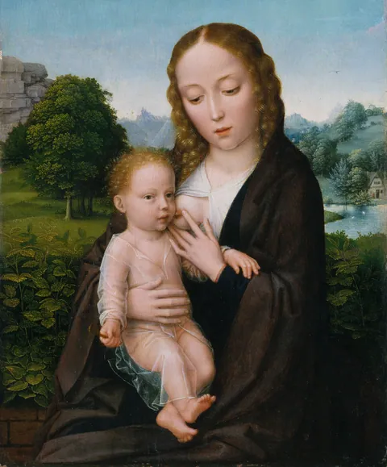
A Virgem e o Menino
Gerard David, cerca de 1520. óleo sobre madeira.
Instituição: The Metropolitan Museum of Art, Nova York. Acesso: 32.100.53
Licença: CC0 1.0 (Open Access do The Metropolitan Museum of Art)
https://www.metmuseum.org/art/collection/search/436103
Foco desktop 50% / 24%, celular 50% / 26%. Uso: Entrada de A vida de Maria e página sobre a virgindade perpétua.
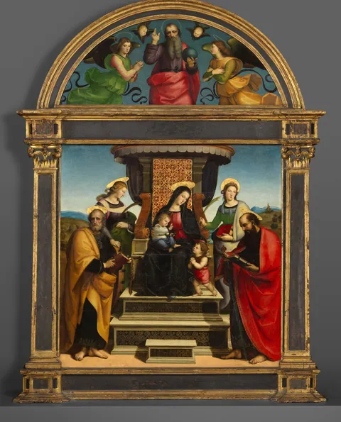
Madona com o Menino entronizados, com santos
Rafael (Raffaello Sanzio), cerca de 1504. óleo e ouro sobre madeira.
Instituição: The Metropolitan Museum of Art, Nova York. Acesso: 16.30ab
Licença: CC0 1.0 (Open Access do The Metropolitan Museum of Art)
https://www.metmuseum.org/art/collection/search/437372
Foco desktop 50% / 58%, celular 50% / 58%. Uso: Entrada de Maria na fé católica.
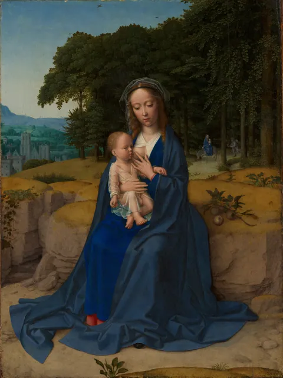
O Descanso na Fuga para o Egito
Gerard David, cerca de 1512-15. óleo sobre madeira.
Instituição: The Metropolitan Museum of Art, Nova York. Acesso: 49.7.21
Licença: CC0 1.0 (Open Access do The Metropolitan Museum of Art)
https://www.metmuseum.org/art/collection/search/436101
Foco desktop 50% / 40%, celular 50% / 42%. Uso: Entrada de Aparições.
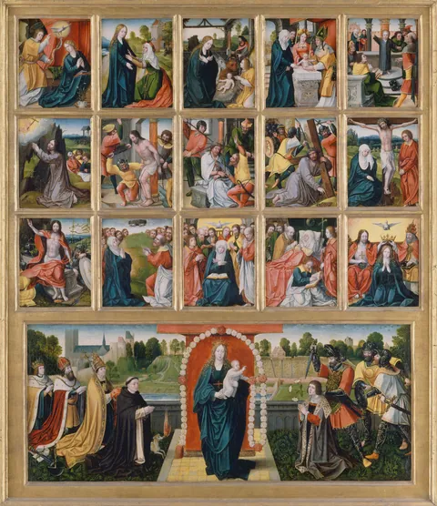
Os Quinze Mistérios e a Virgem do Rosário
Pintor neerlandês (Bruxelas), cerca de 1515-20. óleo sobre madeira.
Instituição: The Metropolitan Museum of Art, Nova York. Acesso: 1987.290.3a-p
Licença: CC0 1.0 (Open Access do The Metropolitan Museum of Art)
https://www.metmuseum.org/art/collection/search/437216
Foco desktop 50% / 30%, celular 50% / 30%. Uso: Rosário e devoções.
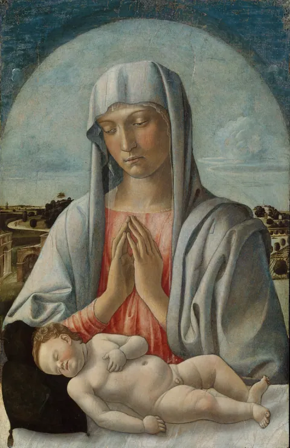
Madona adorando o Menino adormecido
Giovanni Bellini, início da década de 1460. têmpera sobre madeira.
Instituição: The Metropolitan Museum of Art, Nova York. Acesso: 30.95.256
Licença: CC0 1.0 (Open Access do The Metropolitan Museum of Art)
https://www.metmuseum.org/art/collection/search/435640
Foco desktop 50% / 32%, celular 50% / 34%. Uso: Entrada de Milagres.
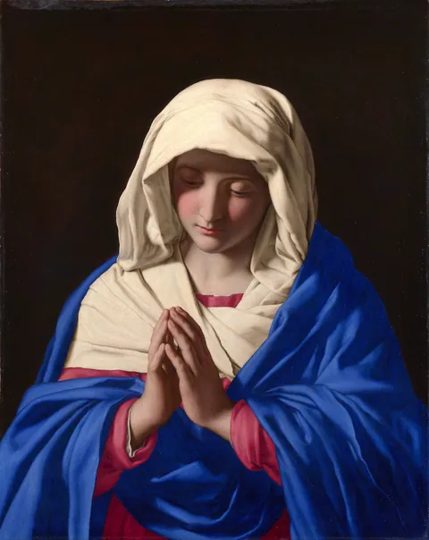
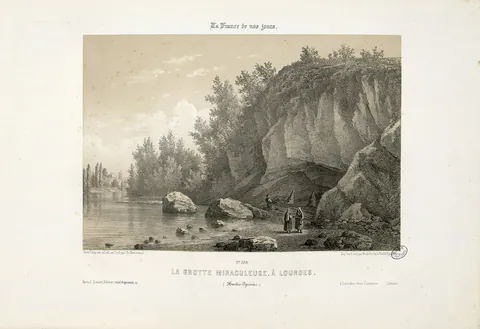
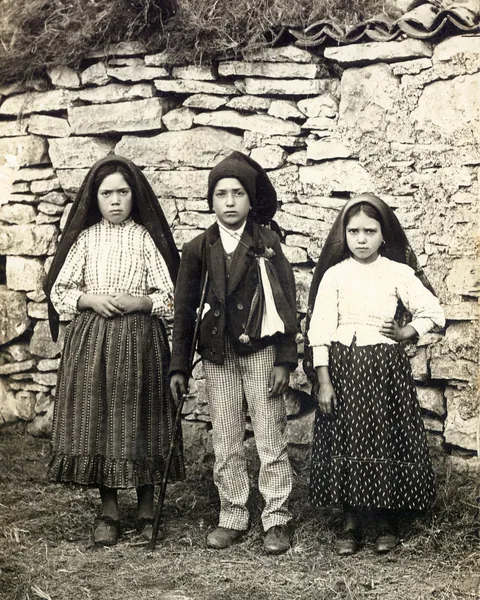
.jpg){kind=link}
.jpg){kind=link}
_%E2%80%93_Ilustra%C3%A7%C3%A3o_Portuguesa,_1917.jpg){kind=link}